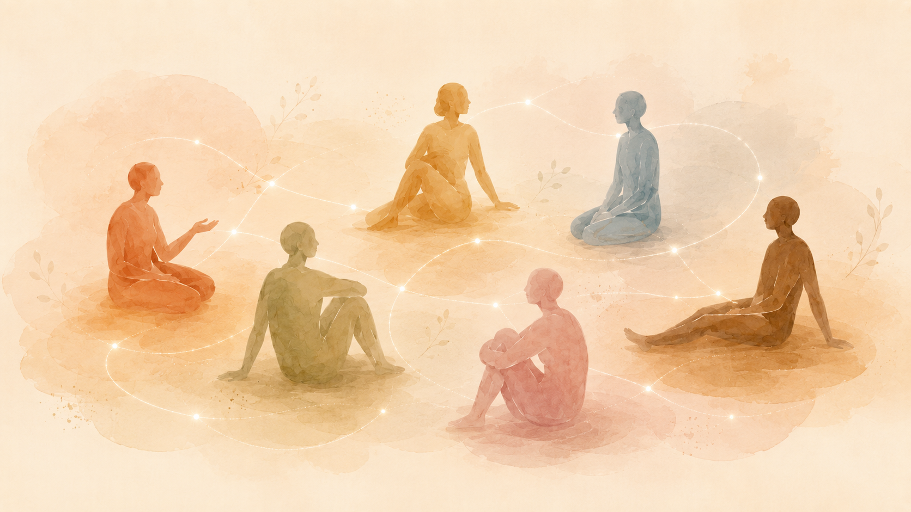

Polyamory, open relationships & relationship diversity
Opening a relationship can feel exciting and unsettling at the same time. Others have lived non-monogamously for years and still reach a point where things get complicated. Jealousy shows up. An agreement suddenly stops working. One person wants more freedom than the other. Or a new relationship changes something in an existing one.

More possibilities can also mean more things you actually need to talk about.
What we might talk about
An agreement can look completely clear on paper and still feel very different in real life. What did you actually agree on? What was only assumed? What does one of you need for freedom to still feel okay? And what happens when needs change?
Jealousy can be loud, embarrassing, angry, or unexpectedly physical. Then it helps to slow the moment down: What is happening? What are you afraid of? What are you trying to get back under control through checking, withdrawing, or adding rules? Jealousy does not have to disappear straight away. First we can understand what it is doing to you and between you.
Some topics are best explored with two people in the room. For others, a third or fourth person needs to be part of the conversation. Who joins a session depends on the issue and on who is affected by it.
My background
In my master’s thesis, I spoke with people in Austria and the United States about life in polyamorous relationships. We talked about jealousy, compersion, rules and boundaries, reactions from family and friends, and experiences with counseling. What stayed with me was what people actually found helpful – and the points where counseling missed the reality of their relationships.
The relationship structure is the frame. In the room, what matters is what is actually happening between the people involved.
Getting to know each other
Tell me what is happening and who is involved. Then we can work out where to begin.